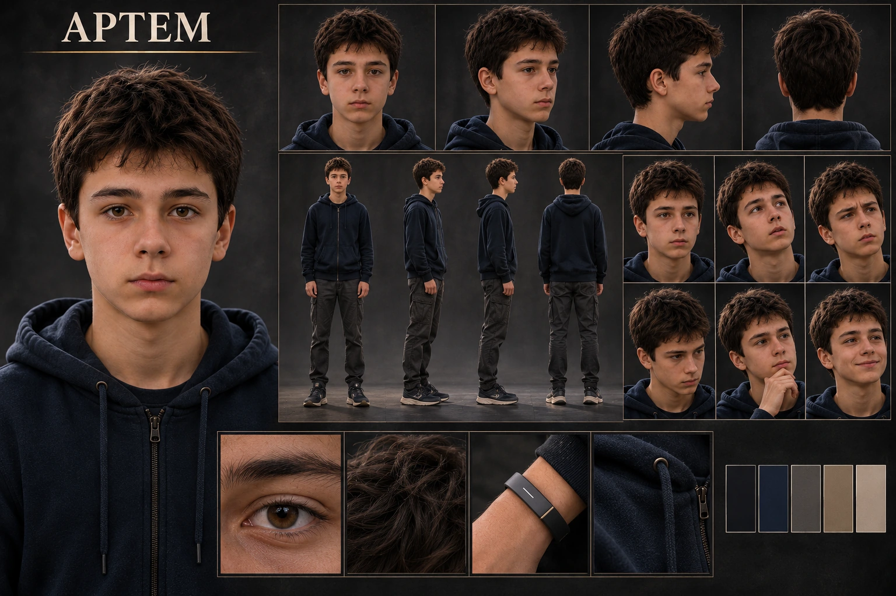

ХАРАКТЕР І ПОВЕДІНКА
Уважність, наполегливість і внутрішня зосередженість
Артем не завжди одразу може пояснити, чому обирає певне рішення. Під час медичних тестів він помічає відхилення в стані пацієнта ще до того, як знаходить для цього логічне пояснення. Його відповіді часто ґрунтуються на внутрішньому відчутті, що саме потрібно перевірити.
Він здатен захопитися справою настільки, що відкладає звичні розваги. Побачивши медичні капсули, Артем повертається до медичного комплексу самостійно, хоча друзі пропонують провести час інакше. Водночас він залишається частиною дружньої компанії та підтримує спільні пригоди.
СЮЖЕТНА ЛІНІЯ
Від переселення до медичної підготовки
У першій книзі Артем показаний у період, коли війна поступово змінює звичне життя. Він приходить із мамою до розподільчого центру, отримує браслет і чекає на переселення до захищеного житлового комплексу. Поруч із ним у цей час — друзі Денис і Влад.
У підземному місті Артем продовжує навчатися. Разом із друзями він досліджує нові сектори, знайомиться з медичною інфраструктурою та вперше бачить, як працюють капсули відновлення. Саме вони привертають його увагу й поступово стають головним напрямом його зацікавлення.
Під час подальших перевірок медики помічають, що Артем інтуїтивно визначає проблеми на діагностичних зображеннях і знаходить потрібні налаштування капсул. Його запрошують на додаткові тести, а згодом він починає навчання в медичному інституті та практичні заняття.
У третій книзі Артем разом із Кайром уже працює з медичними капсулами на практиці. Коли планеті-курорту терміново потрібна допомога медиків, хлопці вирушають разом із медичною групою. Під час бойових дій вони допомагають лікувати поранених і самостійно підбирають режими роботи капсул, перевіряючи одне одного.
ЗДІБНОСТІ ТА НАВИЧКИ
Медична інтуїція
У тестах Артем здатен визначати ділянки ушкоджень і помічати ознаки, які вказують на проблему. Він не завжди може пояснити хід міркувань, але часто приходить до правильного висновку ще до завершення звичайного аналізу.
Його практичний хист проявляється в роботі з медичними капсулами: Артем розуміє параметри пацієнта, підбирає потрібні режими та контролює процес відновлення. У критичній ситуації він не губиться й може працювати без постійних підказок наставника.
Надані фрагменти підтверджують саме медичну інтуїцію та швидке опанування обладнання. Окрему надприродну силу або інші здібності Артемові тут не приписано.
ВІЗУАЛЬНИЙ ПАТЕРН
Зовнішність та образ
Зовнішність
Для візуального образу використано наданий референс: підліток із темним коротким густим волоссям, темними очима та м'якими юнацькими рисами обличчя. Точні числові параметри зовнішності не додаються, оскільки рукописи їх не встановлюють.
Одяг і загальний стиль
Основний образ — темно-синє худі на блискавці та простий повсякденний одяг. Стримана темна палітра відповідає повсякденному підлітковому образу з наданої ілюстрації.
Канон і джерела
Сюжетну біографію звірено з трьома наданими редакціями книг. Перша книга містить сцени розподільчого центру та початку переселення; друга — життя в підземному місті, знайомство з Кайром, медичний комплекс і тести; третя — медичну підготовку та роботу з капсулами під час нападу на планету-курорт. Зовнішність і одяг взято з наданого візуального референсу. Непідтверджені деталі не вигадувалися.